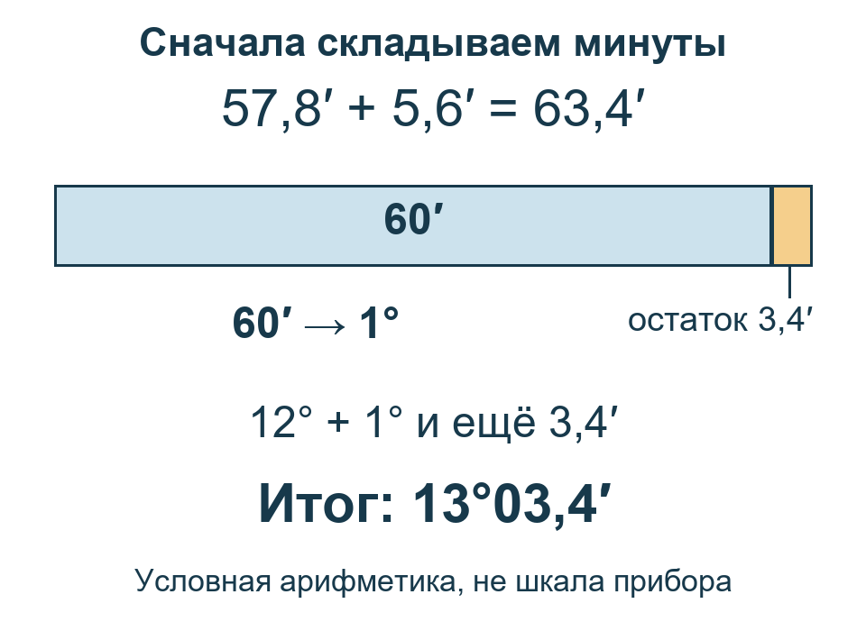

Необязательная подготовка перед расчётами. Для первого отсчёта секстантом проходить её заранее не требуется; проверка понятности человеком ещё не проводилась.
Перед расчётом: семь маленьких навыков
Для игры и учёбы, не для реального судовождения. Здесь только условные бумажные примеры, не показания игры. Не смотрите на настоящее Солнце через незащищённую оптику.
Хотите просто получить первый отсчёт? Начните с прибора: эту страницу проходить заранее не нужно.
Если готовитесь к расчётам, выберите знакомую и незнакомую тему. Можно пользоваться карандашом, калькулятором для арифметики и текстом объяснения. Настоящие навигационные таблицы позже будем читать вручную.
Как пользоваться: попробуйте один вопрос ниже → при затруднении откройте указанную тему → выполните её короткое задание → сверьтесь с отдельным ключом. Баллы считать не нужно.
С чего начать: шесть коротких вопросов
Запишите ответы на бумаге. Все числа здесь заданы для тренировки. Ключ диагностики открывайте после своей попытки.
- Д0.1 — запись. Прочитайте
16°42,7′: что стоит до знака °, что — перед ′? Это то же самое, что16,427°? Разобраться с записью. - Д0.2 — единицы. В записи
08:09:10и в записи11′речь о времени или об угле? В первой записи используем формат часы:минуты:секунды. Различить минуты. - Д0.3 — сложение. Найдите
18°56,8′ + 7,5′. Что делать, если минут получилось больше 60? Переход через 60. - Д0.4 — клетка. По сетке ниже выпишите значение на пересечении строки 32° и столбца 6 м. Читать сетку.
- Д0.5 — промежуток. В условной таблице для 3 м дано 11′, для 5 м — 9′. Только в этом задании изменение между ними считаем равномерным. Найдите значение для 3,5 м. Найти долю.
- Д0.6 — направление. На нашей сетке север сверху, восток справа. В какой четверти окажется направление 135°, отсчитанное от севера по часовой стрелке? Разобрать направление.
Сетка для Д0.4 — только учебная, не выписка из морской таблицы:
| Угол | 4 м | 6 м |
|---|---|---|
| 30° | 9,8′ | 9,4′ |
| 32° | 10,2′ | 9,8′ |
Затруднение означает, что полезно разобрать соответствующую мини-тему. Если всё знакомо, переходите к практикуму.
1. Измеряем поворот взгляда
Что получим: сможем объяснить, почему высота Солнца — угол, а не метры.
Представьте две линии от глаза. Одна направлена к видимому морскому горизонту, другая — к нижнему краю Солнца. Чтобы перевести взгляд с первой на вторую, нужно повернуть его вверх. Секстант измеряет этот угол.

На этой учебной схеме размеры условные. Различие видимого горизонта и строго горизонтального направления разберём позже, в поправках высоты.
Образец объяснения: «Я измеряю, на какой угол нужно повернуть взгляд от горизонта к нижнему краю Солнца. Расстояние до Солнца я так не измеряю».
Б1 — попробуйте: высота глаза над водой записана в метрах. Может ли она заменить угол, прочитанный по секстанту? Объясните одним предложением. Проверить Б1.
Вернуться к первому отсчёту или разобрать полный урок 1.
2. Как прочитать запись угла
Что получим: прочитаем градусы и угловые минуты, не смешав их с десятичными градусами.
Нужно только одно правило: в одном градусе 60 угловых минут. Градусы обозначают знаком °, угловые минуты — знаком ′. Минуты здесь делят угол, а не час.
Посмотрите на запись

В этой записи 39° — целые градусы, 13,4′ — минуты и доли минуты. Десятичная запятая относится к минутам: 13,4′ = 13′ + 0,4′.
Прочитайте по частям
- Найдите знак °. Слева от него — 39 градусов.
- Найдите знак ′. Между ° и ′ записано 13,4 угловой минуты.
- Соедините: «тридцать девять градусов, тринадцать целых четыре десятых угловой минуты».
Это не 39,134°: градусы и минуты нельзя склеивать в одно десятичное число. Сейчас сохраняйте запись с двумя единицами; перевод не требуется.
Если запутались: сначала подпишите под каждым знаком его единицу. Число после запятой — часть той единицы, рядом с которой оно записано.
Б2 — теперь сами
Прочитайте 27°46,2′. Выпишите отдельно градусы и минуты. Что означает 0,2′: часть минуты или часть градуса? Ключ Б2.
Результат: вы можете прочитать обе части записи и назвать их единицы. Следующий шаг — сложить минуты. Для собственного отсчёта — шаг записи Hs в START.
3. Что делать, когда минут больше 60
Что получим: сложим углы и заменим полные 60′ одним градусом. Вычитание разберём отдельно следующим шагом.
Уже известно: 60′ = 1°. Значит, каждые полные 60′ можно заменить одним градусом. Нельзя переносить десятку, как при обычном десятичном сложении.
Разобранный пример
Нужно найти 12°57,8′ + 5,6′. Это условная арифметика, не поправка к вашему наблюдению.

- Складываем минуты:
57,8′ + 5,6′ = 63,4′. - Отделяем полный градус:
63,4′ = 60′ + 3,4′ = 1°03,4′. - Прибавляем его к прежним 12°: 13°03,4′. Нуль перед 3,4 помогает видеть запись минут;
3,4′означает то же число.
Проверка смысла: добавили немного больше 5′, поэтому результат чуть больше 13°, а не 18°.
Б3а — закончите сложение
6°58,6′ + 3,7′. Минуты дают 62,3′; отделите 60′ и запишите итог. Ключ Б3а.
Результат: после переноса минуты меньше 60′. Теперь попробуйте обратное действие — вычитание.
3б. Если минут не хватает для вычитания
Что получим: заменим один градус минутами, не изменив сам угол.
Нужно найти 9°02,0′ − 4,5′. Из 2,0′ нельзя вычесть 4,5′ и оставить прежние 9°. Но один из девяти градусов можно записать как 60′.
Разберите обмен по шагам
- Отделите один градус:
9°02,0′ = 8° + 1° + 2,0′. - Замените его минутами:
8° + 60′ + 2,0′ = 8°62,0′. Угол остался прежним: изменился только способ записи. - Вычтите минуты:
62,0′ − 4,5′ = 57,5′. - Соедините оставшиеся градусы и минуты: 8°57,5′.
Запись 8°62,0′ — промежуточная, для вычисления. В итоговой записи минуты должны быть меньше 60′.
Проверьте обратным действием: 8°57,5′ + 4,5′ = 8°62,0′ = 9°02,0′. Получили исходный угол — обмен выполнен верно.
Б3б — закончите с подсказкой
14°03,0′ − 7,0′. Один градус уже обменяли: 13°63,0′ − 7,0′. Вычтите минуты и сохраните оставшиеся градусы.
Б3в — теперь самостоятельно
21°04,2′ − 8,6′. Запишите обмен одного градуса на 60′, выполните вычитание и проверьте обратным сложением. Ключи Б3б и Б3в.
Если запутались: после обмена градусов станет на один меньше, минут — на 60 больше. Общая величина не меняется.
Результат: можете показать промежуточный обмен и проверить ответ. Дальше — время или поправки в уроке 3.
4. Минуты на часах и минуты угла
Что получим: различим единицы и не потеряем дату при переходе через полночь.
В записи 07:12:30 используем формат часы:минуты:секунды. В записи 7°12,3′ — градусы и угловые минуты. Одинаковое слово «минута» не делает их одной величиной.
| Запись | Что измеряем |
|---|---|
| 2 ч 15 мин | Длительность |
| 2°15′ | Угол |
Один час содержит 60 минут времени. Когда понадобится выразить длительность в часах, 1 ч 30 мин = 1 + 30 ÷ 60 = 1,5 ч. В навигационных таблицах встретится ещё часовая мера угла; её отдельно объясняет урок 5. Здесь не переводим любые минуты часов напрямую в минуты угла.
Разбор образца: от 3 мая 23:50 до 4 мая 00:10 прошло 10 минут до полуночи и 10 после — всего 20 минут, а не отрицательное время. Обе отметки заданы в одной шкале.
Б4 — попробуйте: сколько времени прошло от 5 мая 23:45 до 6 мая 00:20 в той же шкале? Запишите длительность в минутах. Ключ Б4.
Если запутались, разбейте промежуток в полночь. Условная задача не подтверждает доступность GMT и паузы в игре: для своих данных используйте урок 2.
5. Строка, столбец, клетка
Что получим: выпишем число по двум заголовкам.
Строка идёт поперёк таблицы, столбец — сверху вниз. Клетка на их пересечении соответствует сразу обоим заголовкам. Сначала читаем названия и единицы, потом число.
Учебная сетка ниже показывает заданную добавку в угловых минутах для условных угла и высоты. Это не морская поправка и не выписка из F-Tafel.
| Угол | Высота 2 м | Высота 4 м |
|---|---|---|
| 20° | +6,0′ | +5,0′ |
| 22° | +6,4′ | +5,4′ |
Разобранный поиск: для угла 20° и высоты 4 м найдите строку 20°, ведите по ней до столбца 4 м: +5,0′. Перепишите вместе со знаком и единицей, не только цифру 5.
Б5 — попробуйте: найдите добавку для угла 22° и высоты 2 м. Укажите строку, столбец и прочитанную клетку. Ключ Б5.
Если число не находится, вернитесь к двум заголовкам. Не переставляйте аргументы ради знакомого ответа. В настоящих таблицах вид записи и правила чтения могут быть другими: продолжение — урок 3, F VIII и урок 5, F I/F II. Учебная сетка их не заменяет.
6. Между двумя строками
Что получим: найдём нужную долю промежутка, а не будем всегда брать половину.
Половина пути от 5 до 6 — 5,5. Но от 7 до 7,2 пройдена только пятая часть пути до 8: 0,2 ÷ 1 = 0,2.

Условный пример: для 7 м дана добавка 12′, для 8 м — 10′. Только на этом интервале примем равномерное изменение. Нужно значение для 7,2 м.
- Доля пути:
(7,2 − 7) ÷ (8 − 7) = 0,2. - Изменение добавки на всём промежутке:
10′ − 12′ = −2′. - Нужная часть изменения:
−2′ × 0,2 = −0,4′. - От нижнего аргумента 7 м:
12′ − 0,4′ = 11,6′.
Такой поиск промежуточного числа называется линейной интерполяцией. Наш результат лежит между 10′ и 12′ и ближе к 12′, как 7,2 м ближе к 7 м.
Б6 — попробуйте: в другой условной сетке для 4 м дано 14′, для 6 м — 10′. При равномерном изменении найдите значение для 4,5 м. Сначала запишите долю, потом ответ. Ключ Б6.
Если запутались, сравните пройденную часть с полным интервалом, не с верхним числом. За его границы не продолжайте. Для настоящих таблиц действуют правила выбранной страницы: поправки, урок 3, F XI, урок 6.
7. Направление и масштаб
Что получим: отличим направление от расстояния на учебной сетке.
На нашей сетке истинный север специально направлен вверх. Направления считаем от него по часовой стрелке: север 0°, восток 90°, юг 180°, запад 270°. Направление 360° совпадает с 0°.

Образец: направление 90° ведёт вправо, на восток. Но длина линии из числа 90° не следует. Если масштаб задан как 1 см = 2 морские мили, расстоянию 6 миль соответствует 6 ÷ 2 = 3 см.
Перпендикуляр — линия под прямым углом, 90°, к другой линии, как две соседние стороны листа. Само слово не задаёт, через какую точку её нужно провести: точку укажет условие построения.
Б7 — попробуйте: от точки проведите отрезок на юг длиной 4 морские мили при масштабе 1 см = 2 морские мили. Какой угол направления и какую длину на бумаге выберете? Ключ Б7.
На произвольной карте верх не обязательно означает истинный север. Угловую минуту долготы нельзя автоматически считать морской милей: её длина зависит от широты. Масштаб и север проверяйте отдельно. Подробная прокладка — в уроке 6.
Что дальше
Выберите только нужное продолжение: первый отсчёт, бумажный практикум или условия собственного расчёта. Эти задания готовят к работе, но не подтверждают игровые источники данных и не заменяют наблюдения.